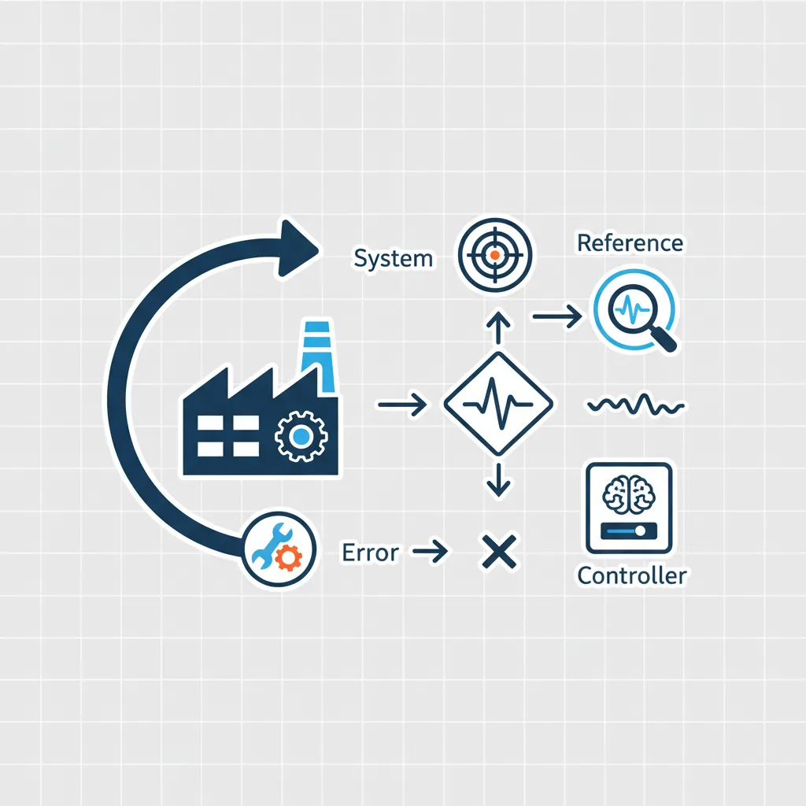
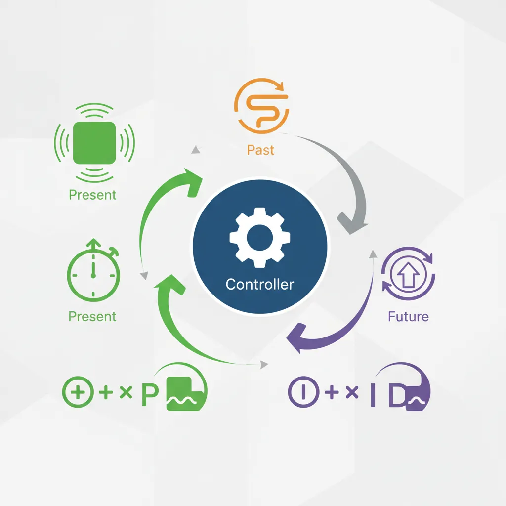
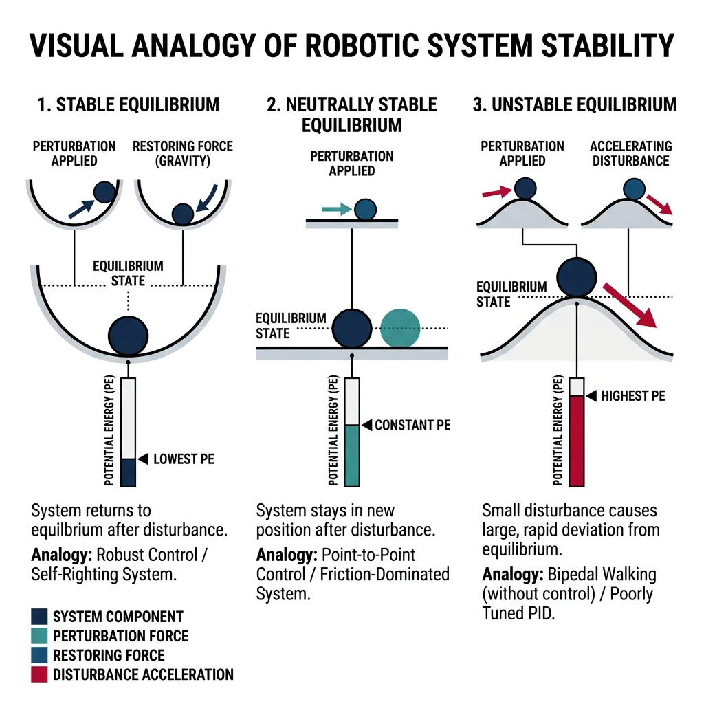
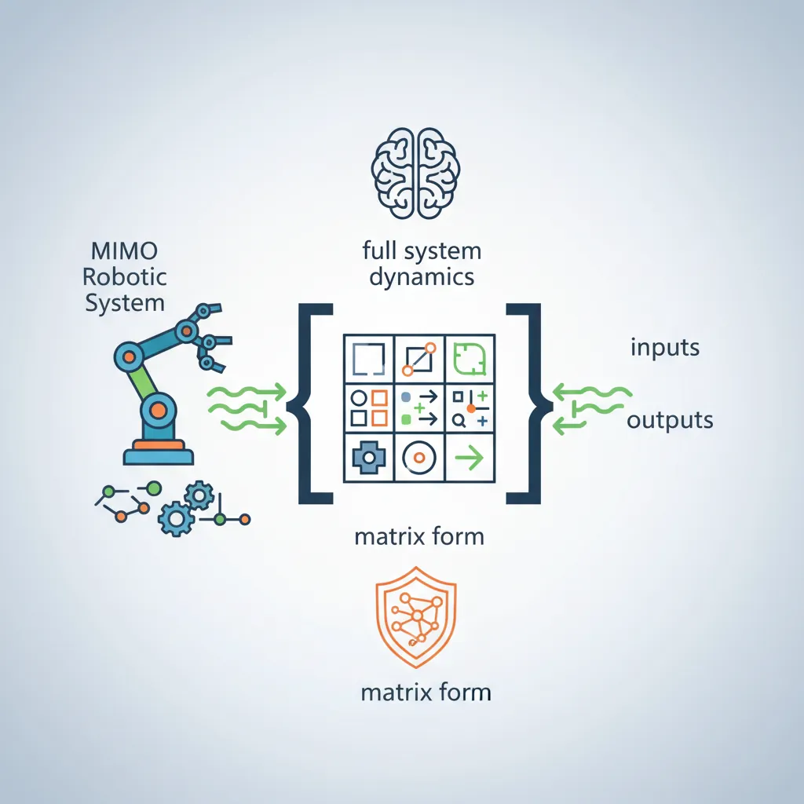
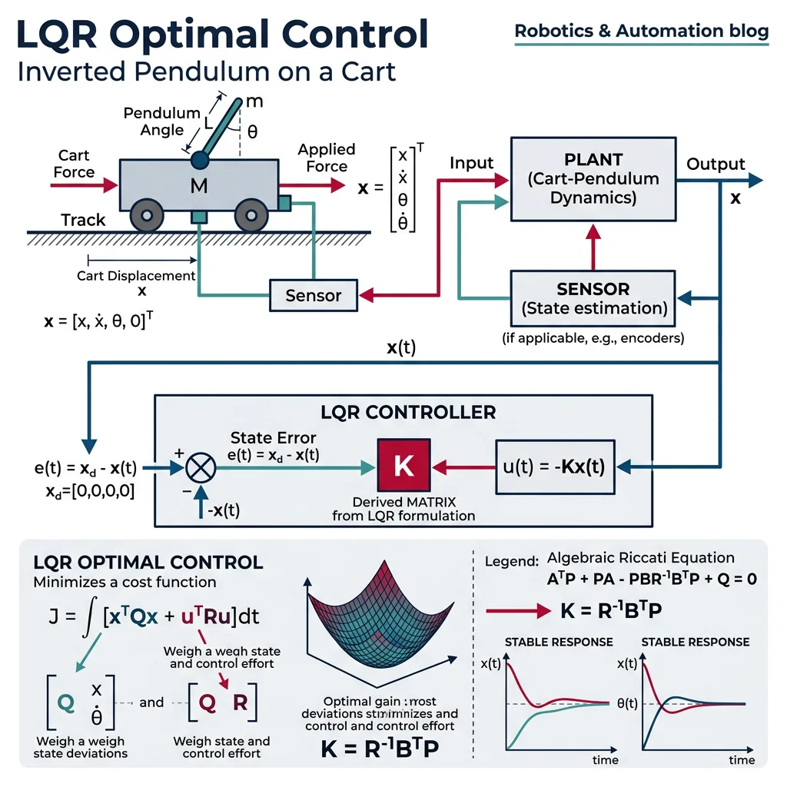

Feedback & Control Basics
Robotics & Automation Mastery
Introduction to Robotics
History, types, DOF, architectures, mechatronics, ethicsSensors & Perception Systems
Encoders, IMUs, LiDAR, cameras, sensor fusion, Kalman filters, SLAMActuators & Motion Control
DC/servo/stepper motors, hydraulics, drivers, gear systemsKinematics (Forward & Inverse)
DH parameters, transformations, Jacobians, workspace analysisDynamics & Robot Modeling
Newton-Euler, Lagrangian, inertia, friction, contact modelingControl Systems & PID
PID tuning, state-space, LQR, MPC, adaptive & robust controlEmbedded Systems & Microcontrollers
Arduino, STM32, RTOS, PWM, serial protocols, FPGARobot Operating Systems (ROS)
ROS2, nodes, topics, Gazebo, URDF, navigation stacksComputer Vision for Robotics
Calibration, stereo vision, object recognition, visual SLAMAI Integration & Autonomous Systems
ML, reinforcement learning, path planning, swarm roboticsHuman-Robot Interaction (HRI)
Cobots, gesture/voice control, safety standards, social roboticsIndustrial Robotics & Automation
PLC, SCADA, Industry 4.0, smart factories, digital twinsMobile Robotics
Wheeled/legged robots, autonomous vehicles, drones, marine roboticsSafety, Reliability & Compliance
Functional safety, redundancy, ISO standards, cybersecurityAdvanced & Emerging Robotics
Soft robotics, bio-inspired, surgical, space, nano-roboticsSystems Integration & Deployment
HW/SW co-design, testing, field deployment, lifecycleRobotics Business & Strategy
Startups, product-market fit, manufacturing, go-to-marketComplete Robotics System Project
Autonomous rover, pick-and-place arm, delivery robot, swarm simControl systems are the invisible intelligence that make robots move precisely. Without control, a robot is just a collection of motors and sensors — with control, it becomes a precise, responsive machine. Think of cruise control in your car: you set a target speed, the controller measures actual speed, and adjusts the throttle to eliminate the difference. Every robotic system, from a simple thermostat to a self-driving car, operates on this same fundamental principle.

Open-Loop vs Closed-Loop Control
In open-loop control, the controller sends a command without measuring the result. A microwave runs for a set time regardless of food temperature. In closed-loop (feedback) control, sensors continuously measure the output and the controller adjusts commands to reduce the error — the difference between desired and actual values.
| Feature | Open-Loop | Closed-Loop |
|---|---|---|
| Feedback? | No | Yes — sensors measure output |
| Accuracy | Low — drifts with disturbances | High — error is continuously corrected |
| Complexity | Simple, cheap | More complex, requires sensors |
| Stability Risk | None (no feedback loop) | Can oscillate if poorly tuned |
| Example | Toaster timer | Thermostat, cruise control |
| Robotic Use | Stepper motor positioning (ideal loads) | Servo motor with encoder feedback |
The standard closed-loop block diagram has five elements:
- Reference (r) — desired setpoint (target position, speed, temperature)
- Error (e = r − y) — difference between desired and actual
- Controller (C) — computes control signal from error
- Plant (G) — the physical system (motor, arm, vehicle)
- Sensor (H) — measures output and feeds it back
import numpy as np
import matplotlib.pyplot as plt
# Simple closed-loop step response simulation
# Plant: first-order system G(s) = 1/(s+1)
# Controller: proportional gain Kp
dt = 0.01 # time step
t = np.arange(0, 10, dt)
setpoint = 1.0 # desired output
# Simulate for different proportional gains
for Kp in [0.5, 1.0, 2.0, 5.0]:
y = 0.0 # initial output
outputs = []
for _ in t:
error = setpoint - y
u = Kp * error # proportional control
dydt = -y + u # plant: dy/dt = -y + u
y += dydt * dt
outputs.append(y)
plt.plot(t, outputs, label=f'Kp = {Kp}')
plt.axhline(y=setpoint, color='k', linestyle='--', label='Setpoint')
plt.xlabel('Time (s)')
plt.ylabel('Output')
plt.title('Closed-Loop Response with Proportional Control')
plt.legend()
plt.grid(True, alpha=0.3)
plt.show()
PID Controllers
The PID controller is the most widely used control algorithm in industry — over 95% of industrial control loops use some form of PID. It produces a control signal by combining three terms:

graph LR
SP["Setpoint
(desired)"] --> SUM(("+
−"))
FB["Feedback
(measured)"] --> SUM
SUM -->|"error"| P["P: Kp × e(t)
Proportional"]
SUM -->|"error"| I["I: Ki × ∫e(t)dt
Integral"]
SUM -->|"error"| D["D: Kd × de/dt
Derivative"]
P --> ADD((Σ))
I --> ADD
D --> ADD
ADD -->|"control signal"| PLANT["Plant
(Motor/Robot)"]
PLANT -->|"output"| SENSOR["Sensor"]
SENSOR --> FB
style SP fill:#e8f4f4,stroke:#3B9797
style PLANT fill:#132440,stroke:#132440,color:#fff
style SENSOR fill:#f0f4f8,stroke:#16476A
where $e(t) = r(t) - y(t)$ is the error, and $K_p, K_i, K_d$ are the tuning gains.
| Term | What It Does | Analogy | Effect |
|---|---|---|---|
| Proportional (P) | Reacts to current error | Steering toward a lane — bigger deviation = bigger correction | Reduces error but leaves steady-state offset |
| Integral (I) | Accumulates past errors | Noticing you're always slightly left, so you gradually add right correction | Eliminates steady-state error but can cause overshoot |
| Derivative (D) | Predicts future error from rate of change | Slowing down as you approach a stop sign — sensing how fast the gap is closing | Reduces overshoot and dampens oscillations |
import numpy as np
import matplotlib.pyplot as plt
class PIDController:
"""Complete PID controller with anti-windup"""
def __init__(self, Kp, Ki, Kd, dt, output_limits=(-100, 100)):
self.Kp = Kp
self.Ki = Ki
self.Kd = Kd
self.dt = dt
self.output_limits = output_limits
self.integral = 0.0
self.prev_error = 0.0
def compute(self, setpoint, measurement):
error = setpoint - measurement
# Proportional term
P = self.Kp * error
# Integral term with anti-windup clamping
self.integral += error * self.dt
I = self.Ki * self.integral
# Derivative term (on error)
derivative = (error - self.prev_error) / self.dt
D = self.Kd * derivative
# Total output with saturation
output = P + I + D
output = np.clip(output, *self.output_limits)
# Anti-windup: if output is saturated, stop integrating
if output == self.output_limits[0] or output == self.output_limits[1]:
self.integral -= error * self.dt
self.prev_error = error
return output, P, I, D
# Simulate PID on a second-order plant (mass-spring-damper)
dt = 0.001
t = np.arange(0, 5, dt)
setpoint = 1.0
# Plant parameters: m*x'' + b*x' + k*x = u
m, b, k = 1.0, 0.5, 2.0
pid = PIDController(Kp=15, Ki=8, Kd=3, dt=dt)
x, v = 0.0, 0.0 # position, velocity
positions = []
for _ in t:
u, _, _, _ = pid.compute(setpoint, x)
a = (u - b * v - k * x) / m # acceleration
v += a * dt
x += v * dt
positions.append(x)
plt.figure(figsize=(10, 4))
plt.plot(t, positions, 'b-', label='Response')
plt.axhline(y=setpoint, color='r', linestyle='--', label='Setpoint')
plt.fill_between(t, setpoint * 0.98, setpoint * 1.02, alpha=0.2, color='green', label='±2% band')
plt.xlabel('Time (s)')
plt.ylabel('Position')
plt.title('PID Control of Mass-Spring-Damper System')
plt.legend()
plt.grid(True, alpha=0.3)
plt.show()
Tuning Methods (Ziegler-Nichols)
Finding the right PID gains ($K_p, K_i, K_d$) is the central challenge of PID control. Several systematic methods exist:
Ziegler-Nichols Step Response Method
Apply a step input to the open-loop plant and measure two parameters from the S-shaped response curve:
- L (dead time / delay) — time before the response starts rising
- T (time constant) — time from the tangent line intersection to 63.2% of final value
| Controller | $K_p$ | $T_i$ | $T_d$ |
|---|---|---|---|
| P only | $T / L$ | ∞ | 0 |
| PI | $0.9 \cdot T / L$ | $L / 0.3$ | 0 |
| PID | $1.2 \cdot T / L$ | $2L$ | $0.5L$ |
Ziegler-Nichols Ultimate Gain Method
Set $K_i = 0$ and $K_d = 0$, then increase $K_p$ until the system oscillates at a constant amplitude. Record:
- $K_u$ (ultimate gain) — the gain at sustained oscillation
- $T_u$ (ultimate period) — the oscillation period
| Controller | $K_p$ | $T_i$ | $T_d$ |
|---|---|---|---|
| P only | $0.5 K_u$ | — | — |
| PI | $0.45 K_u$ | $T_u / 1.2$ | — |
| PID | $0.6 K_u$ | $T_u / 2$ | $T_u / 8$ |
import numpy as np
def ziegler_nichols_ultimate(Ku, Tu, controller_type='PID'):
"""Calculate PID gains using Ziegler-Nichols ultimate gain method.
Args:
Ku: Ultimate gain (gain at sustained oscillation)
Tu: Ultimate period (period of oscillation in seconds)
controller_type: 'P', 'PI', or 'PID'
Returns:
dict with Kp, Ki, Kd gains
"""
if controller_type == 'P':
Kp = 0.5 * Ku
Ki, Kd = 0.0, 0.0
elif controller_type == 'PI':
Kp = 0.45 * Ku
Ti = Tu / 1.2
Ki = Kp / Ti
Kd = 0.0
elif controller_type == 'PID':
Kp = 0.6 * Ku
Ti = Tu / 2.0
Td = Tu / 8.0
Ki = Kp / Ti
Kd = Kp * Td
else:
raise ValueError("controller_type must be 'P', 'PI', or 'PID'")
return {'Kp': round(Kp, 4), 'Ki': round(Ki, 4), 'Kd': round(Kd, 4)}
# Example: motor position control
Ku = 8.0 # ultimate gain found experimentally
Tu = 0.25 # ultimate period = 0.25 seconds
for ctype in ['P', 'PI', 'PID']:
gains = ziegler_nichols_ultimate(Ku, Tu, ctype)
print(f"{ctype:4s} → Kp={gains['Kp']:6.3f}, Ki={gains['Ki']:6.3f}, Kd={gains['Kd']:6.3f}")
Case Study: KUKA LBR iiwa Joint Control
The KUKA LBR iiwa uses cascaded PID loops at each of its 7 joints:
- Inner loop (1 kHz): Current/torque control — maintains desired motor current with P + I controller
- Middle loop (500 Hz): Velocity control — PI controller tracks joint velocity commands
- Outer loop (250 Hz): Position control — PD controller generates velocity commands from position error
Cascaded control provides faster disturbance rejection and allows independent tuning of each loop. The inner loop responds first (within 1ms), stabilizing the motor before the outer position loop even notices a disturbance.
Stability & Analysis
A control system is stable if its output converges to a bounded value for any bounded input. Stability is the most fundamental requirement — an unstable controller can drive a robot arm into wild oscillations or cause a drone to crash.

BIBO Stability (Bounded-Input, Bounded-Output)
A system is BIBO stable if every bounded input produces a bounded output. For linear systems described by transfer functions $G(s) = N(s)/D(s)$, stability requires all poles (roots of $D(s) = 0$) to have negative real parts — i.e., all poles in the left half of the s-plane.
Routh-Hurwitz Criterion
The Routh-Hurwitz criterion determines stability without solving for poles directly. For a characteristic polynomial $a_n s^n + a_{n-1} s^{n-1} + \cdots + a_1 s + a_0$, form the Routh array. The system is stable if and only if all elements in the first column are positive (no sign changes).
import numpy as np
def routh_array(coeffs):
"""Build Routh array and check stability.
Args:
coeffs: list of polynomial coefficients [a_n, a_{n-1}, ..., a_1, a_0]
Returns:
(is_stable, array): stability flag and Routh array
"""
n = len(coeffs)
rows = n
cols = (n + 1) // 2
# Initialize array
routh = np.zeros((rows, cols))
# Fill first two rows
routh[0, :len(coeffs[0::2])] = coeffs[0::2] # odd-indexed coeffs
routh[1, :len(coeffs[1::2])] = coeffs[1::2] # even-indexed coeffs
# Calculate remaining rows
for i in range(2, rows):
for j in range(cols - 1):
if routh[i-1, 0] == 0:
routh[i-1, 0] = 1e-10 # avoid division by zero
routh[i, j] = (routh[i-1, 0] * routh[i-2, j+1] - routh[i-2, 0] * routh[i-1, j+1]) / routh[i-1, 0]
# Check first column for sign changes
first_col = routh[:, 0]
sign_changes = np.sum(np.diff(np.sign(first_col)) != 0)
is_stable = sign_changes == 0 and np.all(first_col > 0)
return is_stable, routh
# Example: s^3 + 6s^2 + 11s + 6 = (s+1)(s+2)(s+3) → stable
coeffs_stable = [1, 6, 11, 6]
stable, array = routh_array(coeffs_stable)
print(f"Polynomial: s³ + 6s² + 11s + 6")
print(f"Stable: {stable}")
print(f"First column: {array[:, 0]}")
# Example: s^3 + 2s^2 - s - 2 = (s+1)(s+2)(s-1) → UNSTABLE
coeffs_unstable = [1, 2, -1, -2]
stable, array = routh_array(coeffs_unstable)
print(f"\nPolynomial: s³ + 2s² - s - 2")
print(f"Stable: {stable}")
print(f"First column: {array[:, 0]}")
Root Locus Method
Root locus plots show how system poles move in the s-plane as a controller gain $K$ varies from 0 to ∞. Poles that cross from the left half-plane to the right half-plane indicate the gain at which the system becomes unstable — the gain margin.
Frequency Response (Bode Plots)
Frequency response analysis evaluates how a system responds to sinusoidal inputs at different frequencies. Bode plots display magnitude (in dB) and phase (in degrees) vs. frequency, providing two critical stability metrics:
- Gain Margin (GM): How much gain can increase before instability — measured at the phase crossover frequency (where phase = −180°). GM > 6 dB is typical.
- Phase Margin (PM): How much additional phase lag is tolerable — measured at the gain crossover frequency (where magnitude = 0 dB). PM > 45° is desirable.
import numpy as np
import matplotlib.pyplot as plt
def bode_plot(num, den, freq_range=(0.01, 100), num_points=1000):
"""Generate Bode magnitude and phase plots.
Args:
num: numerator polynomial coefficients [b_m, ..., b_1, b_0]
den: denominator polynomial coefficients [a_n, ..., a_1, a_0]
"""
omega = np.logspace(np.log10(freq_range[0]), np.log10(freq_range[1]), num_points)
s = 1j * omega
# Evaluate transfer function at each frequency
H = np.polyval(num, s) / np.polyval(den, s)
magnitude_db = 20 * np.log10(np.abs(H))
phase_deg = np.degrees(np.angle(H))
# Unwrap phase for continuous plot
phase_deg = np.degrees(np.unwrap(np.radians(phase_deg)))
fig, (ax1, ax2) = plt.subplots(2, 1, figsize=(10, 6), sharex=True)
ax1.semilogx(omega, magnitude_db, 'b-', linewidth=2)
ax1.axhline(y=0, color='r', linestyle='--', alpha=0.5)
ax1.set_ylabel('Magnitude (dB)')
ax1.set_title('Bode Plot')
ax1.grid(True, which='both', alpha=0.3)
ax2.semilogx(omega, phase_deg, 'r-', linewidth=2)
ax2.axhline(y=-180, color='k', linestyle='--', alpha=0.5)
ax2.set_ylabel('Phase (degrees)')
ax2.set_xlabel('Frequency (rad/s)')
ax2.grid(True, which='both', alpha=0.3)
plt.tight_layout()
plt.show()
# Second-order plant with PID: G(s) = 10 / (s^2 + 2s + 10)
# Open-loop transfer function
bode_plot(num=[10], den=[1, 2, 10])
Case Study: Drone Altitude Control Stability
A commercial quadrotor drone uses cascaded PID loops for altitude hold. During development, engineers discovered instability at high altitudes where air density decreases:
- Problem: Plant gain increased at altitude (less air resistance) — Bode plot showed gain margin shrinking from 12 dB to 3 dB
- Root Cause: Fixed PID gains designed for sea level became too aggressive at altitude
- Solution: Gain scheduling — PID gains are automatically reduced as a function of barometric altitude, maintaining consistent gain margin > 8 dB across all flight altitudes
This is a classic example of why stability analysis matters: the system worked perfectly in ground testing but became oscillatory in real flight conditions.
State-Space Modeling & Observers
State-space representation is the modern approach to control design, especially for multi-input, multi-output (MIMO) systems that transfer functions handle poorly. Every robotic system — from a 6-DOF arm to a quadrotor — is naturally described in state-space form.

The state vector $\mathbf{x}$ captures everything needed to predict future behavior. For a DC motor: $\mathbf{x} = [\theta, \dot{\theta}, i]^T$ (angle, angular velocity, current). For a mobile robot: $\mathbf{x} = [x, y, \theta, v, \omega]^T$ (position, heading, speed, rotation rate).
import numpy as np
import matplotlib.pyplot as plt
# State-space model of a DC motor
# States: x = [theta, omega] (angle and angular velocity)
# Input: u = voltage
# Parameters
J = 0.01 # moment of inertia (kg·m²)
b = 0.1 # friction coefficient (N·m·s)
Kt = 0.01 # torque constant (N·m/A)
Ke = 0.01 # back-EMF constant (V·s/rad)
R = 1.0 # armature resistance (Ω)
L = 0.5 # armature inductance (H)
# State-space matrices (simplified: neglecting inductance)
# x = [theta, omega]
A = np.array([[0, 1],
[0, -(b + Kt*Ke/R) / J]])
B = np.array([[0],
[Kt / (J * R)]])
C = np.array([[1, 0]]) # measure angle
D = np.array([[0]])
print("System Matrix A:")
print(A)
print(f"\nEigenvalues: {np.linalg.eigvals(A)}")
print(f"System is {'stable' if np.all(np.real(np.linalg.eigvals(A)) < 0) else 'UNSTABLE'}")
# Simulate step response
dt = 0.001
t = np.arange(0, 3, dt)
x = np.array([0.0, 0.0]) # initial state
u_val = 12.0 # 12V step input
states = []
for _ in t:
u = np.array([u_val])
x_dot = A @ x + B.flatten() * u_val
x = x + x_dot * dt
states.append(x.copy())
states = np.array(states)
fig, (ax1, ax2) = plt.subplots(2, 1, figsize=(10, 6), sharex=True)
ax1.plot(t, np.degrees(states[:, 0]), 'b-')
ax1.set_ylabel('Angle (degrees)')
ax1.set_title('DC Motor State-Space Response to 12V Step')
ax1.grid(True, alpha=0.3)
ax2.plot(t, states[:, 1], 'r-')
ax2.set_ylabel('Angular Velocity (rad/s)')
ax2.set_xlabel('Time (s)')
ax2.grid(True, alpha=0.3)
plt.tight_layout()
plt.show()
Controllability & Observability
Before designing a controller, verify two fundamental properties:
- Controllability: Can we drive the system from any state to any other state using the available inputs? Check: rank of $\mathcal{C} = [B, AB, A^2B, \ldots, A^{n-1}B]$ must equal $n$ (state dimension).
- Observability: Can we determine all internal states from output measurements? Check: rank of $\mathcal{O} = [C; CA; CA^2; \ldots; CA^{n-1}]$ must equal $n$.
import numpy as np
def check_controllability(A, B):
"""Check if (A, B) is controllable."""
n = A.shape[0]
C_mat = B.copy()
for i in range(1, n):
C_mat = np.hstack([C_mat, np.linalg.matrix_power(A, i) @ B])
rank = np.linalg.matrix_rank(C_mat)
return rank == n, rank
def check_observability(A, C):
"""Check if (A, C) is observable."""
n = A.shape[0]
O_mat = C.copy()
for i in range(1, n):
O_mat = np.vstack([O_mat, C @ np.linalg.matrix_power(A, i)])
rank = np.linalg.matrix_rank(O_mat)
return rank == n, rank
# DC motor example
A = np.array([[0, 1], [0, -11]])
B = np.array([[0], [1]])
C = np.array([[1, 0]])
ctrl, r1 = check_controllability(A, B)
obs, r2 = check_observability(A, C)
print(f"Controllable: {ctrl} (rank = {r1}/{A.shape[0]})")
print(f"Observable: {obs} (rank = {r2}/{A.shape[0]})")
State Observers (Luenberger Observer)
In practice, we can't always measure every state variable. An observer estimates unmeasured states from available sensor data. The Luenberger observer is a copy of the system model with a correction term based on the output error:
The observer gain $\mathbf{L}$ determines how fast estimated states converge to true states. Rule of thumb: observer poles should be 2-10× faster than controller poles.
import numpy as np
import matplotlib.pyplot as plt
# Luenberger observer for DC motor
# Only angle (theta) is measured, estimate velocity (omega)
A = np.array([[0, 1], [0, -11]])
B = np.array([[0], [1]])
C = np.array([[1, 0]])
# Observer gain L — places observer poles at -20, -25 (faster than system)
L = np.array([[35], [500]])
dt = 0.001
t = np.arange(0, 1, dt)
# True state and estimated state
x_true = np.array([0.0, 0.0])
x_hat = np.array([0.5, -5.0]) # wrong initial estimate!
true_states, est_states = [], []
for _ in t:
u = 5.0 # constant input
y = C @ x_true # measurement
# True system evolution
x_true = x_true + (A @ x_true + B.flatten() * u) * dt
# Observer evolution
y_hat = C @ x_hat
x_hat = x_hat + (A @ x_hat + B.flatten() * u + L.flatten() * (y - y_hat)) * dt
true_states.append(x_true.copy())
est_states.append(x_hat.copy())
true_states = np.array(true_states)
est_states = np.array(est_states)
fig, (ax1, ax2) = plt.subplots(2, 1, figsize=(10, 6), sharex=True)
ax1.plot(t, true_states[:, 0], 'b-', label='True θ')
ax1.plot(t, est_states[:, 0], 'r--', label='Estimated θ')
ax1.set_ylabel('Angle (rad)')
ax1.set_title('Luenberger Observer: State Estimation')
ax1.legend()
ax1.grid(True, alpha=0.3)
ax2.plot(t, true_states[:, 1], 'b-', label='True ω')
ax2.plot(t, est_states[:, 1], 'r--', label='Estimated ω')
ax2.set_ylabel('Angular Velocity (rad/s)')
ax2.set_xlabel('Time (s)')
ax2.legend()
ax2.grid(True, alpha=0.3)
plt.tight_layout()
plt.show()
print("Observer converges despite wrong initial estimate!")
Advanced Control Strategies
LQR (Linear Quadratic Regulator)
LQR is an optimal control method that finds the best state-feedback gain $\mathbf{K}$ to minimize a quadratic cost function. Think of PID tuning as trial-and-error; LQR as mathematically computing the optimal gains.

$\mathbf{Q}$ penalizes state deviation (higher = faster response), $\mathbf{R}$ penalizes control effort (higher = less aggressive). The optimal control law is $\mathbf{u} = -\mathbf{K}\mathbf{x}$ where $\mathbf{K}$ is found by solving the algebraic Riccati equation.
import numpy as np
from scipy import linalg
import matplotlib.pyplot as plt
def lqr(A, B, Q, R):
"""Solve the continuous-time LQR problem.
Returns:
K: optimal gain matrix
P: solution to Riccati equation
eigvals: closed-loop eigenvalues
"""
# Solve continuous algebraic Riccati equation: A'P + PA - PBR^-1B'P + Q = 0
P = linalg.solve_continuous_are(A, B, Q, R)
K = np.linalg.inv(R) @ B.T @ P
eigvals = np.linalg.eigvals(A - B @ K)
return K, P, eigvals
# Inverted pendulum on cart (classic control problem)
# States: x = [position, velocity, angle, angular_velocity]
m_cart = 1.0 # cart mass (kg)
m_pend = 0.1 # pendulum mass (kg)
l = 0.5 # pendulum length (m)
g = 9.81
# Linearized A and B matrices (around upright equilibrium)
A = np.array([
[0, 1, 0, 0],
[0, 0, -m_pend*g/m_cart, 0],
[0, 0, 0, 1],
[0, 0, (m_cart+m_pend)*g/(m_cart*l), 0]
])
B = np.array([[0], [1/m_cart], [0], [-1/(m_cart*l)]])
# LQR weights: penalize angle error heavily
Q = np.diag([1, 1, 10, 1]) # state weights
R = np.array([[0.1]]) # control effort weight
K, P, eigs = lqr(A, B, Q, R)
print(f"Optimal gain K: {K.flatten().round(3)}")
print(f"Closed-loop poles: {eigs.round(3)}")
print(f"All poles stable: {np.all(np.real(eigs) < 0)}")
# Simulate with LQR controller
dt = 0.001
t = np.arange(0, 5, dt)
x = np.array([0, 0, 0.2, 0]) # initial tilt of 0.2 rad (~11°)
states = []
for _ in t:
u = -K @ x # LQR control law
x_dot = A @ x + B.flatten() * u.item()
x = x + x_dot * dt
states.append(x.copy())
states = np.array(states)
fig, axes = plt.subplots(2, 2, figsize=(12, 6))
labels = ['Position (m)', 'Velocity (m/s)', 'Angle (rad)', 'Angular Vel (rad/s)']
for i, ax in enumerate(axes.flat):
ax.plot(t, states[:, i], linewidth=2)
ax.set_ylabel(labels[i])
ax.grid(True, alpha=0.3)
axes[1][0].set_xlabel('Time (s)')
axes[1][1].set_xlabel('Time (s)')
fig.suptitle('LQR Control of Inverted Pendulum', fontsize=14, fontweight='bold')
plt.tight_layout()
plt.show()
Model Predictive Control (MPC)
MPC is the most powerful general-purpose control strategy. Unlike PID which reacts to current error, MPC predicts the future by simulating the plant model forward over a prediction horizon, then optimizes control inputs to minimize a cost over that horizon. Only the first control action is applied, then the process repeats — this is called receding horizon control.
| Feature | PID | LQR | MPC |
|---|---|---|---|
| Model needed? | No | Linear model | Any model |
| Handles constraints? | No (requires ad-hoc) | No (post-hoc saturation) | Yes (built-in) |
| MIMO capable? | Poorly (separate loops) | Yes | Yes |
| Computational cost | Minimal | Low (pre-computed gain) | High (real-time optimization) |
| Optimal? | No | Yes (infinite horizon) | Yes (finite horizon) |
| Typical use | Single-loop industrial | Aerospace, robotics | Autonomous vehicles, process control |
import numpy as np
import matplotlib.pyplot as plt
def simple_mpc(A, B, Q, R, x0, N_horizon, N_steps, dt, u_min=-10, u_max=10):
"""Simplified linear MPC with constraints.
Args:
A, B: discrete-time system matrices
Q, R: state and input weight matrices
x0: initial state
N_horizon: prediction horizon (steps)
N_steps: total simulation steps
u_min, u_max: input constraints
"""
n = A.shape[0]
x = x0.copy()
states = [x.copy()]
inputs = []
for step in range(N_steps):
# Simple MPC: evaluate cost for candidate inputs
best_cost = float('inf')
best_u = 0
# Grid search over control inputs (simplified)
for u_cand in np.linspace(u_min, u_max, 50):
cost = 0
x_pred = x.copy()
for k in range(N_horizon):
cost += x_pred.T @ Q @ x_pred + u_cand**2 * R[0, 0]
x_pred = A @ x_pred + B.flatten() * u_cand
if cost < best_cost:
best_cost = cost
best_u = u_cand
# Apply first control action
x = A @ x + B.flatten() * best_u
states.append(x.copy())
inputs.append(best_u)
return np.array(states), np.array(inputs)
# Discrete-time double integrator (position control)
dt = 0.1
A = np.array([[1, dt], [0, 1]])
B = np.array([[0.5*dt**2], [dt]])
Q = np.diag([10, 1])
R = np.array([[0.1]])
x0 = np.array([5.0, 0.0]) # start at position=5, want position=0
states, inputs = simple_mpc(A, B, Q, R, x0, N_horizon=10, N_steps=50, dt=dt)
fig, (ax1, ax2) = plt.subplots(2, 1, figsize=(10, 6), sharex=True)
t = np.arange(len(states)) * dt
ax1.plot(t, states[:, 0], 'b-', linewidth=2)
ax1.axhline(y=0, color='r', linestyle='--')
ax1.set_ylabel('Position')
ax1.set_title('MPC: Position Regulation with Input Constraints')
ax1.grid(True, alpha=0.3)
ax2.step(t[:-1], inputs, 'r-', linewidth=2, where='post')
ax2.axhline(y=10, color='k', linestyle=':', alpha=0.5, label='Constraint')
ax2.axhline(y=-10, color='k', linestyle=':', alpha=0.5)
ax2.set_ylabel('Control Input')
ax2.set_xlabel('Time (s)')
ax2.legend()
ax2.grid(True, alpha=0.3)
plt.tight_layout()
plt.show()
Case Study: Tesla Autopilot — MPC for Lane Keeping
Tesla's Autopilot uses MPC for lateral (steering) control:
- Prediction horizon: ~2 seconds ahead at current speed
- Vehicle model: Bicycle model with tire slip angles
- Constraints: Maximum steering angle (±500°), steering rate (±1000°/s), lane boundaries
- Cost function: Minimize lateral deviation from lane center + heading error + steering effort + jerk (comfort)
- Update rate: 50 Hz — solves optimization at every control cycle
MPC naturally handles the nonlinear tire dynamics and road curvature that would make a simple PID controller inadequate for highway-speed lane keeping.
Adaptive & Robust Control
Real robots face uncertainty: unknown payloads, changing friction, unmodeled dynamics. Adaptive and robust control address this.
Adaptive Control
Adaptive control adjusts controller parameters online to compensate for unknown or changing plant dynamics. The two main approaches are:
- Model Reference Adaptive Control (MRAC): Defines a reference model for desired behavior; adaptation law adjusts gains so the plant tracks the reference model
- Self-Tuning Regulators: Estimate plant parameters online (system identification) and redesign the controller at each step
import numpy as np
import matplotlib.pyplot as plt
# Simple MRAC (Model Reference Adaptive Control) example
# Plant: y_dot = a*y + b*u (a, b unknown to controller)
# Reference model: y_m_dot = a_m * y_m + b_m * r
a_true = -2.0 # true (unknown) plant parameter
b_true = 3.0 # true (unknown) input gain
a_m = -5.0 # desired model dynamics
b_m = 5.0 # desired model input gain
# Adaptation gains (learning rates)
gamma_theta = 10.0
gamma_k = 10.0
dt = 0.001
t = np.arange(0, 10, dt)
r = np.sign(np.sin(0.5 * t)) # square wave reference
y = 0.0 # plant output
y_m = 0.0 # model output
theta_hat = 0.0 # estimated feedforward gain
k_hat = 0.0 # estimated feedback gain
outputs, model_outputs, errors = [], [], []
for i in range(len(t)):
# Tracking error
e = y - y_m
# Adaptive control law
u = theta_hat * r[i] + k_hat * y
# Plant dynamics (unknown to controller)
y_dot = a_true * y + b_true * u
y = y + y_dot * dt
# Reference model dynamics
y_m_dot = a_m * y_m + b_m * r[i]
y_m = y_m + y_m_dot * dt
# Adaptation laws (MIT rule)
theta_hat -= gamma_theta * e * r[i] * dt
k_hat -= gamma_k * e * y * dt
outputs.append(y)
model_outputs.append(y_m)
plt.figure(figsize=(10, 4))
plt.plot(t, model_outputs, 'b-', label='Reference Model', alpha=0.7)
plt.plot(t, outputs, 'r-', label='Adaptive Plant Output', alpha=0.7)
plt.xlabel('Time (s)')
plt.ylabel('Output')
plt.title('MRAC: Plant Adapts to Track Reference Model')
plt.legend()
plt.grid(True, alpha=0.3)
plt.show()
Robust Control (H∞)
Robust control designs controllers that work well despite bounded uncertainties — it doesn't adapt but designs for the worst case. The H∞ (H-infinity) method minimizes the worst-case effect of disturbances on performance. While mathematically complex, the key intuition is: design for the worst-case plant model within a defined uncertainty set.
| Feature | Adaptive Control | Robust Control |
|---|---|---|
| Handles uncertainty by | Learning and adjusting online | Designing for worst case |
| Parameter knowledge | Unknown but structure known | Bounded uncertainty region |
| Performance | Optimal after adaptation | Conservative but guaranteed |
| Stability guarantee | Conditional (adaptation must converge) | Guaranteed within uncertainty bounds |
| Best for | Slowly varying, large uncertainty | Fast variations, strict safety |
Nonlinear Control
Real robots are inherently nonlinear — gravity varies with configuration, friction is discontinuous, and actuators saturate. Nonlinear control methods handle these directly rather than linearizing.
Feedback Linearization
Transform a nonlinear system into an equivalent linear system through a change of variables and nonlinear state feedback. If the robot dynamics are $\mathbf{M}(\mathbf{q})\ddot{\mathbf{q}} + \mathbf{C}(\mathbf{q}, \dot{\mathbf{q}})\dot{\mathbf{q}} + \mathbf{g}(\mathbf{q}) = \boldsymbol{\tau}$, choose:
This cancels all nonlinearities, leaving $\ddot{\mathbf{q}} = \mathbf{v}$, a simple double integrator. Then design a linear controller for $\mathbf{v}$: $\mathbf{v} = \ddot{\mathbf{q}}_d + K_d(\dot{\mathbf{q}}_d - \dot{\mathbf{q}}) + K_p(\mathbf{q}_d - \mathbf{q})$
Sliding Mode Control (SMC)
SMC forces the system state onto a predefined sliding surface $s(\mathbf{x}) = 0$ using high-frequency switching. Once on the surface, the system slides toward the equilibrium regardless of disturbances — providing invariance to matched uncertainties.
import numpy as np
import matplotlib.pyplot as plt
# Sliding Mode Control for a nonlinear system
# Plant: x_dot = f(x) + b(x)*u + d(t) (disturbance)
# x_dot = -x^3 + u + d
dt = 0.001
t = np.arange(0, 5, dt)
x_desired = 2.0 # desired position
# SMC parameters
lam = 5.0 # sliding surface slope
eta = 2.0 # switching gain (must exceed max disturbance)
phi = 0.1 # boundary layer thickness (for chattering reduction)
x, x_dot = 0.0, 0.0 # initial conditions
positions, surfaces, controls = [], [], []
for i in range(len(t)):
# Tracking error and sliding surface
e = x - x_desired
s = x_dot + lam * e # s = e_dot + lambda * e
# External disturbance (unknown to controller)
d = 1.5 * np.sin(3 * t[i])
# SMC control law with saturation (reduces chattering)
# u_eq = x^3 - lambda * x_dot (equivalent control)
# u_sw = -eta * sat(s/phi) (switching control)
u_eq = x**3 - lam * x_dot
u_sw = -eta * np.clip(s / phi, -1, 1) # saturation function
u = u_eq + u_sw
# Plant dynamics: x_ddot = -x^3 + u + d
x_ddot = -x**3 + u + d
x_dot += x_ddot * dt
x += x_dot * dt
positions.append(x)
surfaces.append(s)
controls.append(u)
fig, axes = plt.subplots(3, 1, figsize=(10, 8), sharex=True)
axes[0].plot(t, positions, 'b-', linewidth=2)
axes[0].axhline(y=x_desired, color='r', linestyle='--', label='Desired')
axes[0].set_ylabel('Position')
axes[0].set_title('Sliding Mode Control with Disturbance Rejection')
axes[0].legend()
axes[0].grid(True, alpha=0.3)
axes[1].plot(t, surfaces, 'g-', linewidth=1)
axes[1].axhline(y=0, color='k', linestyle='--')
axes[1].set_ylabel('Sliding Surface s')
axes[1].grid(True, alpha=0.3)
axes[2].plot(t, controls, 'r-', linewidth=1)
axes[2].set_ylabel('Control Input u')
axes[2].set_xlabel('Time (s)')
axes[2].grid(True, alpha=0.3)
plt.tight_layout()
plt.show()
Lyapunov-Based Control
Lyapunov stability theory is the foundation for proving stability of nonlinear systems. Instead of finding poles (which only works for linear systems), you find a Lyapunov function $V(\mathbf{x}) > 0$ whose time derivative along system trajectories is negative: $\dot{V}(\mathbf{x}) < 0$. This guarantees the system converges to the origin — like showing a ball always rolls downhill on your energy landscape.
Case Study: Boston Dynamics Atlas — Whole-Body Control
Atlas uses a sophisticated control hierarchy combining multiple strategies:
- High-level (10 Hz): MPC plans center-of-mass trajectory and footstep placement over a 1-second horizon
- Mid-level (200 Hz): Whole-body QP controller — solves a quadratic program distributing force across all contacts while respecting friction cones, joint limits, and torque limits
- Low-level (1 kHz): Computed torque control with joint-level PD loops for tracking the QP-computed joint trajectories
- Recovery control: Lyapunov-based balance controller activates when the center of pressure approaches the support polygon boundary
The combination of MPC (planning), QP (force distribution), computed torque (nonlinearity cancellation), and Lyapunov (stability guarantee) enables Atlas to perform parkour, backflips, and recover from pushes.
PID Tuning Worksheet
Use this interactive tool to document your PID tuning parameters. Enter your system configuration and download a professional report.
PID Tuning Worksheet
Document your controller parameters and tuning results. Download as Word, Excel, or PDF.
All data stays in your browser. Nothing is sent to or stored on any server.
Exercises & Challenges
Exercise 1: PID Temperature Controller
Implement a PID controller for a simulated oven. The plant model is: $T_{dot} = -0.05 \cdot (T - T_{ambient}) + 0.8 \cdot u$ where $T_{ambient} = 25°C$. Setpoint is 200°C.
- Tune using Ziegler-Nichols step response method
- Add anti-windup and constrain heater power to $0 \leq u \leq 100\%$
- Plot response showing rise time, overshoot, and settling time
Exercise 2: LQR Balancing Robot
Design an LQR controller for a two-wheeled balancing robot (like a Segway). The state vector is $\mathbf{x} = [\phi, \dot{\phi}, x, \dot{x}]$ (tilt angle, tilt rate, position, speed).
- Derive the linearized state-space model around the upright equilibrium
- Verify controllability
- Design LQR with Q = diag([100, 10, 1, 1]) and R = [1], then compare with Q = diag([1, 1, 100, 10])
- Discuss how Q weights change the behavior (angle priority vs. position priority)
Exercise 3: Observer Design Challenge
For the DC motor state-space model in this article, design a Luenberger observer that estimates angular velocity from position measurements only.
- Verify the system is observable
- Place observer poles at 5× the controller pole frequencies
- Simulate with incorrect initial estimates and show convergence
- Add measurement noise and compare observer performance with and without noise
Conclusion & Next Steps
Control systems form the core intelligence of every robotic system. We've progressed from fundamental feedback concepts through PID — the workhorse of industry — to advanced strategies like LQR, MPC, adaptive control, and nonlinear methods. Key takeaways:
- PID is sufficient for 90%+ of single-loop control problems when properly tuned
- State-space methods (LQR, observers) are essential for MIMO systems and modern robotics
- MPC is the gold standard when constraints and prediction matter
- Nonlinear control (computed torque, SMC, Lyapunov) handles the reality that robots are inherently nonlinear
- Stability analysis (Routh-Hurwitz, Bode, root locus) must be verified before any deployment